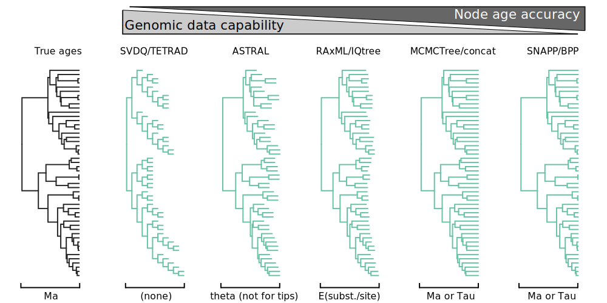
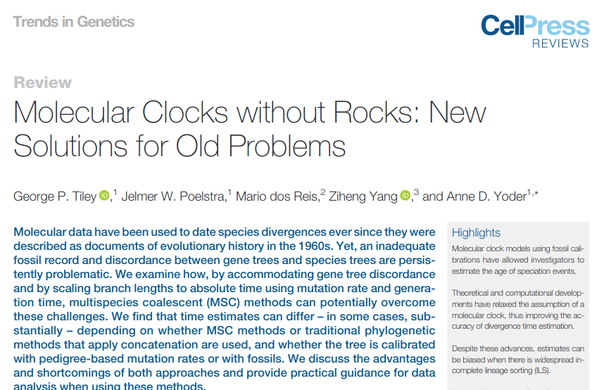
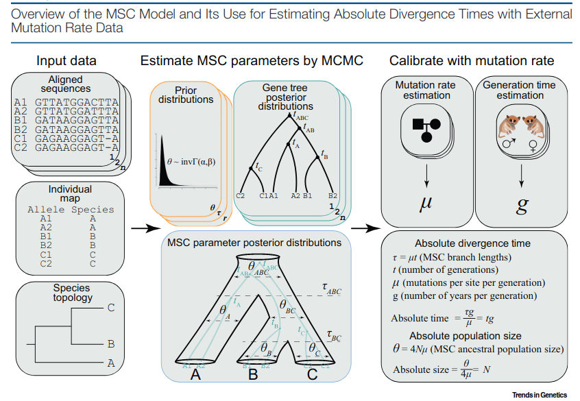
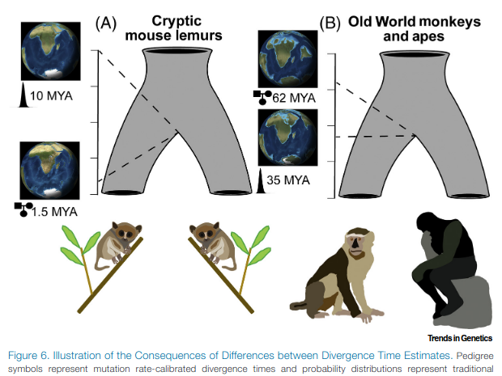
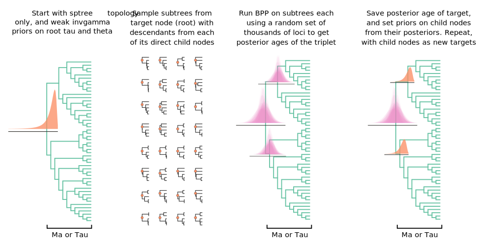

Inferring super time-calibrated species trees with superbpp
Deren Eaton, Assistant Professor
Dept. of Ecology, Evolution, and Environmental Biology
Columbia University
w/ co-authors: Carlos Alonso Maya Lastra,
Sandra Hoffberg,
Henry Landis, and Michael Landis
How can we most accurately reconstruct the
evolutionary history
of organisms from their genomes?
The order and timing of diversification (node age estimation)
Phylogenomic sampling
Goal: infer phylogenetic history from a subset of sampled genomes (inds/haplos).

Phylogenomic inference methods
Major challenges for phylogenomic node dating
- Concatenation: remains commonly used despite known over-estimation bias (ILS)
- Distant/uncertain fossil calibrations: most groups lack good fossils
- MSC approaches are slowww...

Tiley et al. 2020, Trends in Genetics

Tiley et al. 2020, Trends in Genetics

Tiley et al. 2020, Trends in Genetics
Why do so few of us use MSC molecular clock methods?
- ILS is not a concern
- mu and gentime are too hard to estimate
- It takes too long to run
A new approach: super time-calibrated species trees
- Inspired by supertree methods (Bininda-Emonds 2004)
- Dated supertrees (Jetz et al. 2012, Upham et al. 2019): combine many BEAST subtrees to one large calibrated backbone
- Super species trees: Combine many MSC trees into one large dated MSC tree.
superbpp approach to super species tree inference
- BPP v4.3 (Flouri et al. 2018) fast, easy to use -- does the hard work.
- Our new tool https://github.com/eaton-lab/superbpp/
- infer MSC div times for large trees (>100 tips) using thousands of loci
- runs BPP iteratively over replicate subtrees spanning every node
- extracts random taxon and locus sets to creates bpp inputs
- sets appropriate priors on every subtree by stepwise postorder traversal
- summarizes results of subtree analyses.
Super species tree inference
Phylogenomics of the plant genus Amaranthus

Empirical example: Amaranthus
- 38 ingroup taxa, 172 samples, Genomic 3RAD data
- 10 replicate random 5-tip subtrees per internal node
- 1000 random loci per replicate run (0% missing)
- Approximately 4 days runtime (15 cores)
Empirical example: Amaranthus
- gentime=1 (annual plants)
- mut rate 99%CI = 1e-9 to 7e-9: crown age estimate (99%CI=2-6 Ma)
- much younger than previous (Waselkov 2018; 11-16Ma) based on Sanger and deep fossil (>65Ma)
- Cultivated grain crop clade is appropriately young (<100K)
- Known hybrid taxon A. dubius has conflicting age interval.
Ongoing and future work: coalescent simulations/tests
- Testing with simulations against concat and MSC methods on large trees
- Extracting full tree posteriors from subtree posteriors (GP method)
- Incorporation of fossils calibrations.
- Testing with high rate variation from Ne and/or G.
Conclusions: super species tree inference
- Super species trees combine many small MSC analyses into one large node dated tree
- MSC is most appropriate when ILS is high (e.g., rapid radiations)
- Molecular clock provides an alternative when fossils are scarce
- Not suited for all situations, but hopefully useful for some
Acknowledgements
Kasi Molina-Velez
Sandra Hoffberg
Carlos Alonso Maya Lastra
Henry Landis
Michael Landis
USDA ARS germplasm
NSF DEB
NSF PGRP
Columbia Lenfest Award